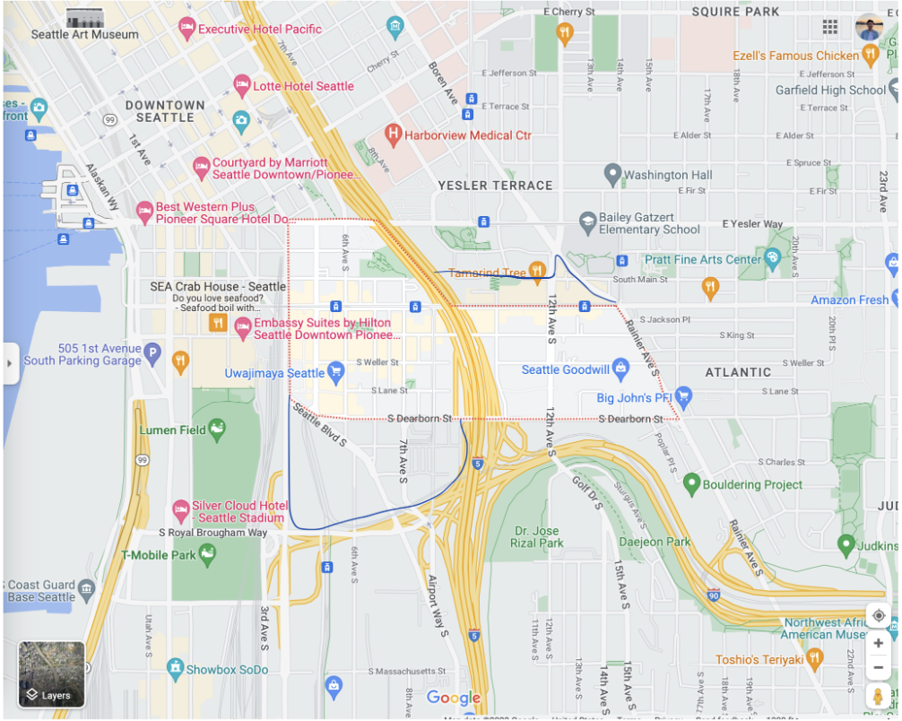
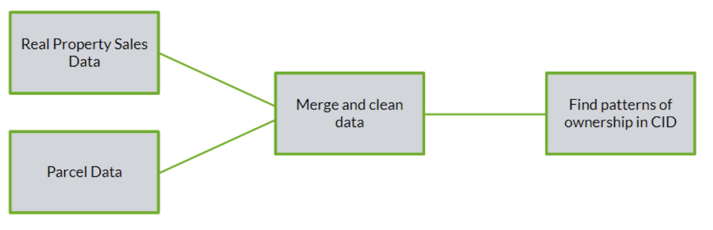
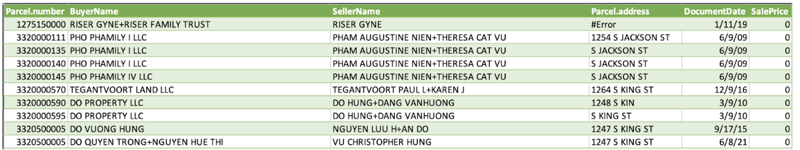
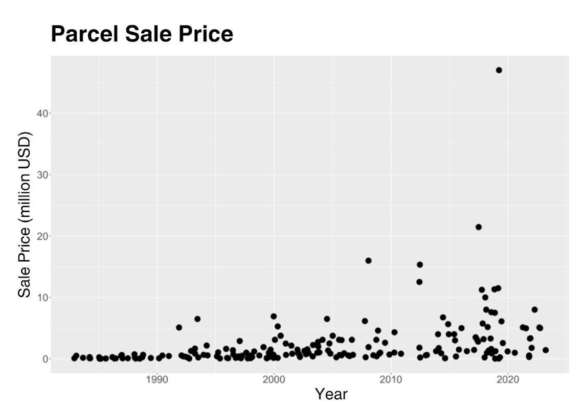
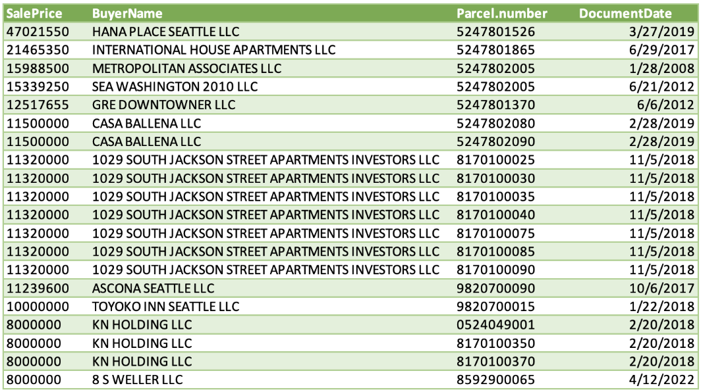
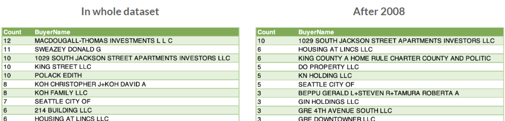

Table of Contents
1. Background and Problem Statement
2. System Requirements
3. Data Acquisition
3.1. Agreed Upon CID Bounds
4. Data Analysis Strategy
4.1. Cleaning the Data
4.2. Creating the Map
4.3. Creating the Charts/Tables
5. Discussion of Results
5.1. “Transfer of Ownership” In the Same Hands
5.2. Parcel Sales Over Time
5.3. Top 20 Sale Prices
5.4. Top 10 Occurrences of Buyer
6. Summary, Conclusions, and Recommendations
7. References
8. Appendices
8.1. Appendix A: Contacts
8.2. Appendix B: Samples of Tables, Charts, and Reports
8.3. Appendix C: Resumes
8.3.1. Christopher Cha Resume
8.3.2. Edward Kim Resume
8.3.3. My-An Pham Resume
8.3.4. Kya Rice Resume
1. Background and Problem Statement
The background and problem statement serves the purpose of explaining the purpose
of our project and what we were aiming to accomplish in completing the project.
In the past 15 years, the Chinatown International District (CID) has faced significant upzoning,
challenging the well-being of its working-class community. Our goal was to develop an interactive
web map and analysis to preserve small business land ownership and advocate for land conservation in the CID.
We had three main objectives for this project. The first was to analyze notable changes in ownership trends over
time within the CID. The second was to analyze how land is utilized within the CID, and what the predominant land
use patterns are. The third objective was to analyze the ways in which corporate entities who own land within the
CID are impacting its local community and residents.
We wanted to take a deeper look at LLC's (Limited Liability Companys). This is because LLC's hide the true owner of
parcels which makes it hard to understand ownership and land use in an area. We also wanted to look at the occurrence
of $0 property transactions and analyze what this means and why this is occurring so frequently within the CID.
The following sections will discuss the systems used to create the web map and the process used to clean the data needed
for the creation of our map. We will also discuss our findings and any concluding statements and recommendations for
future research.
2. System Requirements
As for the demands of our project, we needed an interactive web map that would implement the parcel data for each building
within the CID, supplemented by details such as buyer name, tax payer name, seller name, date of purchase, and purchase price. Our data was acquired
through the King County Assessor's office, which will be further elaborated on in Section 3 of our report. The first part
of our system requirements centered around QGIS, which we used to generate raster tiles for our map. This was accomplished
through the QTiles plugin and, in doing so, provided a smoother navigation, as well as faster loading times even when handling
our extensive dataset. MapBox was crucial in our research, as it provided us with a foundation and stylistic options for our web
map. We integrated MapBox into our workflow by leveraging its vast array of mapping tools and services and by employing its Application
Programming Interface (API). We were able to connect with MapBox's mapping services, such as tilesets, geocoding, and routing,
using the API key. The API key made it possible to retrieve and display our raster tiles generated from QGIS. We were able to select
a visually appealing and informative base map that suited our study aims, specifically by using MapBox's street style. After our
basemap was completed using QGIS and MapBox, we used R Studio in order to remove any inconsistencies, errors, and verify data quality
in order to cater the parcel data to our projects needs. Furthermore, VS Code was used as our development platform for creating our HTML
web map. Its code editor gave us an effective platform for authoring, revising, and debugging our web map code. We created the HTML code
that defined the structure, layout, and functionality of our web map using the features of VS Code. The relevant pieces, such as map
containers, buttons, dropdowns, and data overlays were created using HTML's markup language. Additionally, the use of GitHub was required to
effectively manage and publish our project. GitHub was critical to our project as it provided a centralized platform for collaborative
development and version control, allowing us to properly track the progress and contributions of each team member.
3. Data Acquisition
As requested by our sponsor, we wanted more information on the parcel data that appears on the the King County Assessor's Office
parcel viewer. When a parcel in King County is selected, a popup that gives information about the
parcels is displayed. This includes a link to the property report of the parcel, which has a bulk of the information our sponsor is interested
in. We requested the assessor's office to provide us with the dataset that was used for the property report, but for all parcels within the CID.
The data specialist sent us a link to most of the data we requested,
but let us know that the data is not all in one dataset and they do not delineate the CID in their data. In looking through the tables provided in
the link they sent, we found that the Real Property Sales table had
a bulk of the information we wanted to work with (including buyer, seller, document date (of the sale), sale price, and more), but we could not
find year built, current use, or taxpayer. After attempts to request that information but receiving no response, we decided to move forward with
the data we had.
There was one major issue with the Real Property Sales data that we needed to resolve: we did not know which parcels were a part of the CID.
Our solution was to use the parcel viewer to select all the parcels in the agreed upon CID bounds (see in section 3.1 below) and extract the information on these parcels
that the parcel viewer allows us to extract. This information includes the taxpayer, full parcel number, and address of the parcel. Through doing
this, we then knew which parcels are a part of the CID and have the addresses of the parcels to be able to geocode them when we create our map.
We extracted the information from the parcel viewer by going to Advanced Tools > Select parcels > Freehand Polygon and then selecting all parcels
in the CID. When we attempted to do this with all parcels in the CID at once, the parcel viewer produced an error message saying they could not select
that many parcels at a time. To combat this, we selected and extracted the parcels into an excel file in small chunks, with the intent to combine them
into one dataset when we were cleaning the data.
All things considered, we had two datasets that we used from the King County Assessor's Office. The Real Property Sales data and the Parcel data. Our
next step was finding a way to merge these two datasets into one file, but this proved to be more complicated than it seems. The Real Property Sales
data did not have the full parcel numbers. Instead, the parcel numbers were separated into two columns: Major (the first six values of the parcel number)
and Minor (the last four values of the parcel number). In addition, the major and minor columns did not have leading zeros, so we needed to include the
leading zeros before we could combine the major and minor columns to get the full parcel numbers. We will discuss how we did this along with the rest of
our data cleaning process in the section below.
3.1. Agreed Upon CID Bounds

A link to this map can also be found in Section 8.2: Appendix B.
4. Data Analysis Stategy
In this section, we will discuss our approach to analyzing the data and how we went about working with such a large and complex dataset.
As requested, we intended to create a map to help visualize how each parcel has changed hands within the CID. However, this would only
offer methods of individual parcel analysis, so we also wanted to generate tables and charts that could help us understand overall trends
in ownership and land usage.
Our process follows the chart below. After acquiring our Real Property Sales data and Parcel data, we merged and cleaned these datasets
together to create the dataset we would generate analysis from. Then, to look into the patterns of ownership in the CID, we created a map
to visualize changes in ownership for each parcel as well as four tables/charts for overall analysis of ownership trends..

4.1. Cleaning the Data
For this project, our primary data source consisted of several Excel files obtained from the Washington King County Assessor's Office as
mentioned in our “Data Acquisition” section. The first excel file was the Real Property Sales file, which contained the majority of the
data needed: document date, buyer, seller, sale price, major (first six values of the parcel number), minor (last four values of parcel number),
and more. The remaining excel files were extracted from the King County Assessor's Office parcel viewer, which contained values like the full parcel
number, address, appraised value, and more. To create a comprehensive and clean dataset with these files, we utilized R, a powerful tool for data analysis
and manipulation.
Our first step was to consolidate the files into a single dataset for ease of access and analysis. For this purpose, we used the readxl library in R to read
each Excel file, and the dplyr library's full_join function to merge all parcel data files into one large parcel file. After doing this, we needed a way to
combine the parcel data and sales data, but there were discrepancies in formatting between datasets. The 'Minor' and 'Major' columns in the sales file lacked
leading zeros, meaning that if we attempted to merge them to find the parcel number, we would not have the correct 10 digit value. To fix this, we employed the
str_pad function from the stringr library to add leading 0s until each ‘Major’ column had 6 values and each ‘Minor’ column had 4 values. Then we merged these
columns to form a unified ‘Parcel.number’ column. This allowed us to join the Parcel data and Real Property Sales data by parcel number into one larger dataset.
We also transformed the 'DocumentDate' column from a character type into a date format, so that we could filter the dataset by date when needed. Another critical
step was to decode several columns in the sales data to provide meaningful insights. We looked into the King County Data and found coded values and their corresponding
decoded descriptions to create multiple excel files to be merged into the dataset. This includes: 'proptype', 'principaluse', 'propertyclass', 'saleinstrument', and
'salereason' to accompany coded values with their corresponding descriptions. The 'SaleWarning' column required special treatment due to the presence of multiple warnings
in a single cell, separated by spaces. We split these multiple values into separate rows using the separate_rows function from the tidyr library.
Like many real-world datasets, ours contained missing or incorrect data. We handled this by using error checks and data manipulation methods within our R script. This
ensured that our dataset was as complete and accurate as possible. The 'SaleWarning' column contained multiple warnings per row, making decoding a complex task. We resolved
this by splitting these values into separate rows, converting them into numeric format, and then merging with a lookup table to obtain their decoded values. We then re-aggregated
the decoded warnings per parcel, creating a comma-separated list of all warnings for each parcel.
Our data cleaning process was an essential step towards the visualization of property ownership in the Chinatown International District. By systematically addressing issues in our
raw data and transforming it into a suitable format, we have prepared a robust dataset that will serve as the foundation for our mapping application. Despite the challenges we faced,
our approach demonstrates how effective data cleaning strategies can overcome complex issues and prepare raw data for meaningful analysis. Our work forms a strong basis for our future
task of visualizing the dataset on an interactive map.
4.2. Creating the Map
The aim of our project was to provide a visual representation of property ownership in the Chinatown International District for our sponsor, Puget Sound Sage. To achieve this, we designed
and developed an interactive map using Mapbox GL JS, a powerful and versatile library that allows for the creation of interactive, customizable maps.
Our data source was a CSV file, containing detailed information on various properties such as their parcel numbers, addresses, taxpayer names, sale prices, and dates. We chose the CSV format
due to its wide adoption and compatibility with numerous platforms and tools. Using the Papa Parse library, we were able to read this CSV file and transform its data into JavaScript objects that
could be utilized in our application. For each property in the file, we used the Mapbox Geocoding API to convert the address into geographic coordinates, which are necessary for placement on the map.
For user interactivity, we implemented a feature allowing the user to hover over any point on the map to see relevant information about the property. In addition, we designed a feature (to be implemented)
that allows users to filter the data view by year, allowing them to focus on specific periods of interest.
A major challenge was that some addresses in the dataset could not be converted to coordinates. This was due to limitations of the geocoding service and the presence of incorrectly formatted or non-existent
addresses in the data. To address this issue, we performed a data cleanup process, correcting the formatting of the addresses where possible. We also handled errors by checking the response of the Geocoding
API, and providing a warning in the console if coordinates could not be found. This ensured the application would continue to function even if some addresses were not geocoded successfully. We found that some
records in the CSV file contained incorrect or missing data. This was resolved by implementing error checks and handling methods within our JavaScript code. This allowed our application to continue running
smoothly and present as much accurate information as possible, even when encountering problematic data. We still encountered a difficulty with populating all of the data points that we needed, so
we took the advice of our peers and decided to utilize the free trial from Google’s Geocoding API to fulfill our needs for coordinates.
4.3. Creating the Charts/Tables
Now, to understand overall trends of ownership and usage, we wanted to analyze various patterns within our dataset. We came up with four tables and charts to analyze this information:
“‘Transfer of Ownership" in the same hands” is our first item for analysis, which was created with the intention of recognizing and analyzing how the majority of the points in our dataset were not actual sales,
but ownership was being transferred. These occurrences are signified by a sale price of 0, meaning that there was no money involved and the parcel was essentially handed off to the next owner.
Our second item for analysis is a scatterplot of parcel sale prices over time. This was created to visualize any trends and outliers in sale prices over time. Since the majority of sale prices were 0, we decided
to remove these values from the scatterplot since it would not give much more information on patterns and would instead overcrowd our plot. In addition, some of the sales prices were high values in the millions,
so we divided the sales prices over 1,000,000 to make the plot easier to read.
“Top 20 Sale Prices” is our third item for analysis, which displays the 20 buyers with the highest sale prices from greatest to least, what parcel they purchased, and when these sales were made. This can help us
recognize the LLC’s that are investing large amounts of money into the CID and analyze any underlying patterns between them. Not only that, but it also gives us the exact sale prices of the outliers found on the
scatterplot we made previously, which can help us conceptualize how much buyers are willing to spend on the CID and any patterns on the years these purchases were made.
Our last items for analysis are a “Top 10 Occurrences of Buyer” table for the whole dataset (1980s-2023), and another for after 2008 to 2023. This table was generated by first counting the amount of times each buyer has occurred
in the dataset as a whole and then again for all values after 2008. Then, we pulled the 10 buyers with the highest amount of occurrences from both the whole dataset and values after 2008, also listing how many occurrences
they had. This helps us see who has purchased and had involvement in the most parcels in the CID. Then, we can analyze patterns between who these buyers are and if their involvement was present in the last 15 years (from 2008 and on).
Through all of these items, we intend to find patterns and generate analysis on the CID and ownership transfers trends: what, how much, and when.
5. Discussion of Results
As described in our data analysis strategy, we generated four items from our dataset to draw conclusions about our data and on the CID. In this section, we will present these items and discuss what we found from them.
This includes recognizing ownership transfers that seemingly stayed in the same hands, looking into what parcels are sold for over time, the top sale prices for parcels, and the top buyer occurrences.
5.1. "Transfer of Ownership" In the Same Hands
After generating a table with all parcel sales that had a sale price of 0, we were able to find that out of all 629 CID parcel sale instances in our dataset, 366 of them had a sale price of 0. In pulling a sample of
our table with the sales that occurred with a sale price of 0, we can gain a better understanding of what is happening in these sales.

In taking a closer look at the buyers and sellers of parcels with a sale price of 0, we can see that there are often perceived similarities between the names of the buyers and sellers. While there is technically a sale
happening, the price at 0 and similar names between buyers and sellers allows us to infer that the parcel is staying in the same hands in these instances. In the majority of the instances shown above, the buyer name
seemingly derives from the seller name with the addition of LLC. This might mean that the seller started an LLC after previously purchasing the parcel, but in wanting the parcel to be owned by their LLC they sold the
parcel to their LLC at the price of 0. This is important to recognize, because it shows that LLC’s can be small businesses and a parcel being owned by an LLC is not always an indication that the parcel is not owned by the
CID community. On the other hand, this emphasizes how LLC’s and sale prices at 0 can easily hide the true owners of a parcel. Small businesses and corporations alike can own LLC’s, so while the table above demonstrates
examples of LLC’s likely being small business owners, there are likely cases where large corporations are owners of CID parcels as well.
5.2. Parcel Sales Over Time
With the knowledge that the majority of points in our dataset had a sale price of 0, we wanted to visualize patterns over time of parcel sales that did not have a sale price of 0. In our scatterplot below, we can understand
typical prices of parcels over the years as well as the outliers and when they occur.

Through looking at our scatterplot, we can see that most parcel sale prices are under 5 million. There are a handful of parcels that were sold between 5 and 10 million, but above 10 million is where we start to see more outliers
in the data. We can see that within the last 15 years, not only are we seeing more of these outliers but we also can see the sale prices are more spread out and not as condensed in lower prices as the years prior. The sale prices
being spread out with higher values is likely a result of inflation, but the outliers may be an indication of something else. Without additional details on the sales, we can infer that these outliers are a result of large investments
and are less likely to be small businesses. As a result, there is potential that these outlier sales take parcels out of the hands of the community and contribute to harmful causes for the community, which is why further exploration
is needed.
5.3. Top 20 Sale Prices
After visualizing the marginal difference of the outliers from the rest of the data, we wanted to take a closer look at the information provided for the outliers. Using the table below, we can see which buyers to investigate to gain a
better understanding of why the sale price was so high for the parcel.

There is an extremely clear pattern that can be seen through analyzing who the buyers are for the top sale prices. When looking at the date these parcels were purchased, all were within the last 15 years and the majority were in the last
5 years. While it is tough to know exactly who is behind these LLC’s and what the properties are used for, a majority of these buyers are associated with housing and apartments. It is rather alarming that the highest sales in our data are
apartments, as this is an indication of gentrification: with large investments in the CID being for housing, comes increased rent and wealthier people moving in. This is a prime example of the CID being in danger, as these high price and
large scale housing options have and will continue to push members out of the community.
5.4. Top 10 Occurences of Buyer
To further investigate buyers of parcels within the CID, we looked into buyers that appeared the most in our dataset. By looking into the buyers in the tables below, we are able to compare who has bought the most parcels in the last 15 years
to who has bought the most parcels in the entire dataset that dates back to the 1980s. This tells us if the buyer that bought the most parcels in the whole dataset, bought some or all of those parcels in the last 15 years.

When comparing the two tables, we can see that the buyers that occur in both datasets are: 1029 South Jackson Street Apartments Investors LLC, Seattle City Of, and Housing at Lincs LLC. This means that three of the buyers that have the most
occurrences of buying parcels in our entire dataset, bought some or all of their parcels within the last 15 years. In addition to that, as mentioned in the previous section, it is tough to find who is behind these buyers and what they are doing.
It is clear however by their names, that two out of the three of these buyers that appear in both datasets have some purpose with housing and apartments. We can infer from this that there are two housing projects that began in the last 15 years,
at such a large scale to the point where the buyers have bought the most parcels recorded to date.
It is important to note however, that these tables were generated with Sale Price 0 values included, meaning that they may have bought the most parcels but a transaction directly related to the parcels may not have been involved. Instead, there
may have been an acquisition in play, but we cannot know for sure unless we do a deep dive into these specific purchases. It is also important to recognize that these are the top occurrences of buyers and does not mean that the buyers still own
the property to date. It is possible that they have since sold the property, which can be found by looking through our dataset to see if they have since sold the parcel.
6. Summary, Conclusions, and Reccomendations
When conducting an analysis of the top ten buyers within the CID, we found that the majority of the top buyers were LLC’s. When we googled each individual LLC, we were not able to find much information other than that they were related to real estate.
More specifically housing and apartments. This raised concerns with us about the increasing gentrification in the area. These concerns of gentrification within the CID were confirmed when we conducted an analysis on the top 20 sale prices. We found
that all 20 top sale prices have been within the last ten years, and were bought by LLC’s, a majority of these LLC’s being associated with housing and apartments. It is alarming that both the top ten buyers and top 20 sale prices are directly correlated
to commercial apartments and housing. This helps to show us the rise in competitive real estate prices and gentrification within the Chinatown-International District. This gentrification of the area is detrimental to the historical integrity of the district
and to the residents on the CID.
We would recommend further investigation into $0 value transactions between buyers and sellers and the deeper meaning behind why this is happening. This transfer of ownership is commonly happening between the same hands of people, so figuring out the
motivation behind this could be useful when determining land use and reason of purchase. We also recommend looking at the current use of each parcel as this will help us to determine what the LLC’s are using the parcels for. Since LLC’s hide the true owner
of property, looking at the current use of the parcels would be the most efficient way of identifying the reason for purchase and sale.
7. References
“King County Department of Assessments.” King County Department of Assessments: Assessments Data Download. Accessed April 5, 2023. https://info.kingcounty.gov/assessor/DataDownload/default.aspx.
“Parcel Viewer.” King County Parcel Viewer. Accessed April 6, 2023. https://gismaps.kingcounty.gov/parcelviewer2/.
8. Appenencies
8.1. Appendix A: Contacts
~ King County Assessor's Office
---Phone: 206-296-0100
---Email: assessor.info@kingcounty.gov
~Howard Greenwhich
---Email: howard@pugetsoundsage.org
---Organization: Puget Sound Sage
8.2. Appendix B: Samples of Tables, Charts, and Reports
~ The data we worked with to craft our web map and analysis was provided to us by the King County
Assessor's Office. See below for a link to the Assessments Data Download file we were provided.
8.3. Appendix C: Resumes